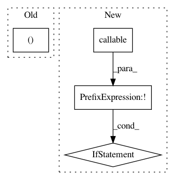

9daf3fee71db91e1adae8410ab8c70846df764ed,python/tvm/auto_scheduler/workload_registry.py,,serialize_workload_registry_entry,#Any#,199
Before Change
name = workload[0]
value = WORKLOAD_FUNC_REGISTRY[name]
return name, value
def deserialize_workload_registry_entry(data):
After Change
sname = workload[0]
svalue = WORKLOAD_FUNC_REGISTRY[sname]
if not callable(svalue):
// pylint: disable=assignment-from-no-return
svalue = SaveJSON(svalue)
return sname, svalue
def deserialize_workload_registry_entry(data):
In pattern: SUPERPATTERN
Frequency: 3
Non-data size: 4
Instances
Project Name: apache/incubator-tvm
Commit Name: 9daf3fee71db91e1adae8410ab8c70846df764ed
Time: 2021-02-06
Author: 70961591+dlexplorer@users.noreply.github.com
File Name: python/tvm/auto_scheduler/workload_registry.py
Class Name:
Method Name: serialize_workload_registry_entry
Project Name: analysiscenter/batchflow
Commit Name: 8fa906d9b705d48766076ec8a60e89fd290d095c
Time: 2019-03-15
Author: Tsimfer.SA@gazprom-neft.ru
File Name: batchflow/models/tf/deep_galerkin.py
Class Name: DeepGalerkin
Method Name: build_config
Project Name: scikit-learn/scikit-learn
Commit Name: 84bc8d341e5a0a0d0b20b8acda58a33d72a2c23a
Time: 2020-02-01
Author: georgepf@gmail.com
File Name: sklearn/svm/_base.py
Class Name: BaseLibSVM
Method Name: _validate_for_predict